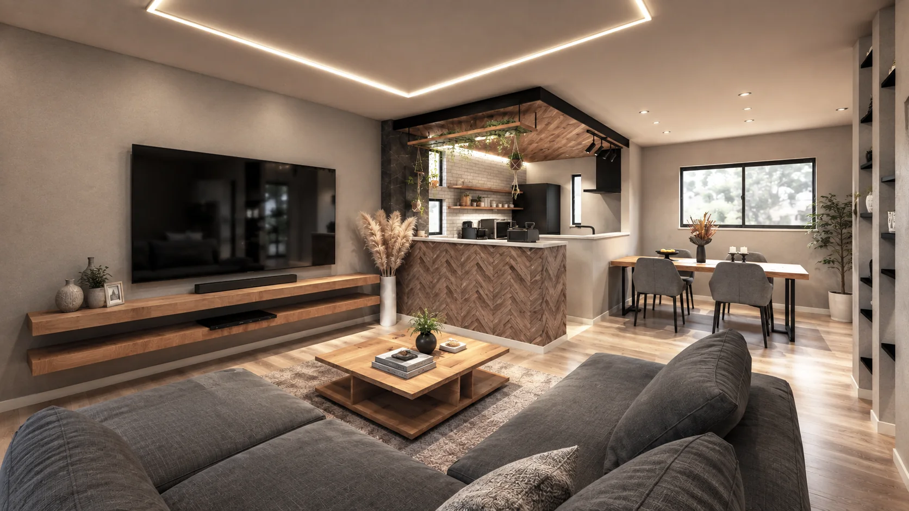
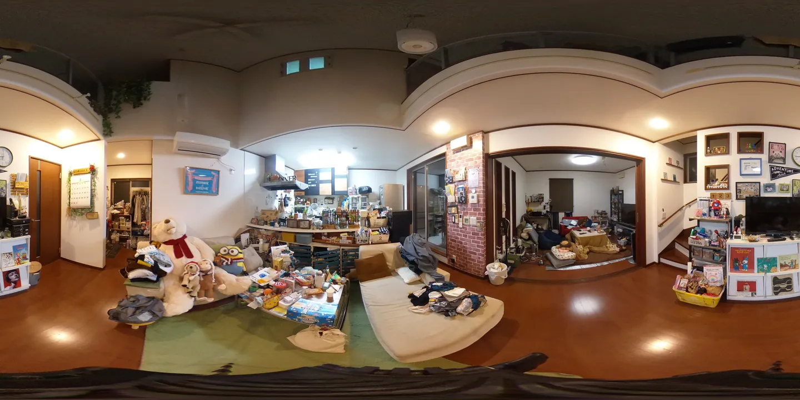
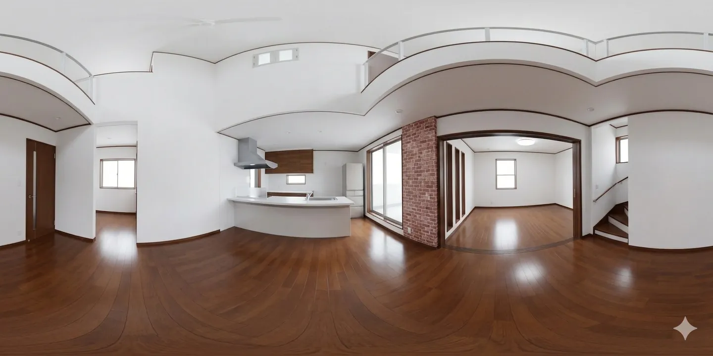
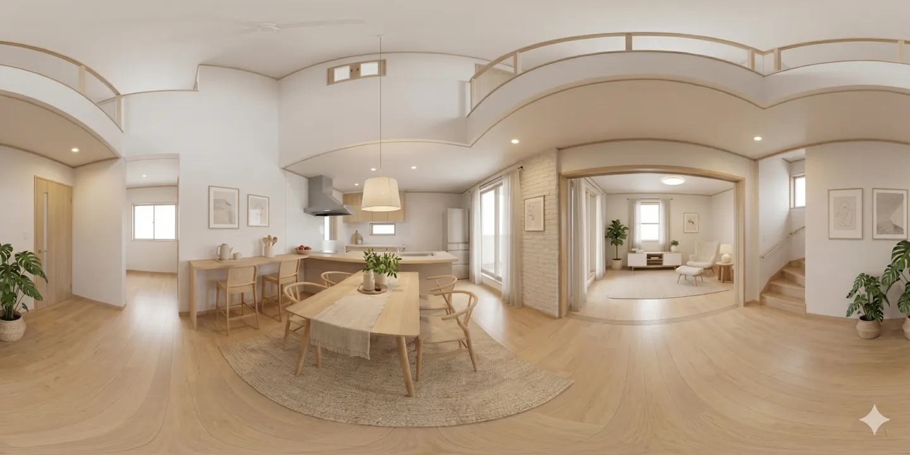

3D VR PERSPECTIVE

平面図だけの状態から、住んだあとの景色をつくる
まだ建っていない住まいを、家具・照明・窓の外まで含めて1枚で伝えます。打ち合わせの場で「これなら分かる」と言ってもらうための絵です。
CROSSACTOR ／ 建築 × AI
3D VRパース、動きのあるWebサイト、現場で使えるAIの仕組み。設計の実務を積んできた人間が、企画から手を動かして作ります。
※ 平面図と3Dの動きはイメージ ／ パースは制作実例
WORKS
掲載しているパースと図面は、実際にお渡ししたものです。お客さまの了解をいただいた範囲で、社名は伏せて紹介しています。
まだ建っていない住まいを、家具・照明・窓の外まで含めて1枚で伝えます。打ち合わせの場で「これなら分かる」と言ってもらうための絵です。


視点を変えたカットを並べると、間取りのつながりが伝わります。VRにすれば、その場で見回して歩けます。



空室のまま案内するより、暮らしが見えたほうが決まります。写真を送ってもらえれば、片づけて家具を置いた状態をつくります。360度で見回せる形にも対応します。

設計事務所さま・不動産会社さまからの作図代行を続けてきました。絵だけの会社ではないので、法規や納まりの話がそのまま通じます。
冒頭の動き（点と線が集まる → 街になる → 平面図が描かれて実際のパースになる）は、すべてこのページの中で動いています。動画ではありません。外部のライブラリも使わず、文字も画像も自前で持っているので、スマホでも軽く動きます。
同じ作り方で、会社のサイトやキャンペーンのLPをお作りします。「他社と同じテンプレートに見えるのが嫌だ」という方に向いています。
AI IN PRACTICE
研修やコンサルでお話しするのは、机上の一般論ではありません。自分の会社の業務を実際にAIで回していて、そこで分かったこと・失敗したことをそのままお伝えします。以下はすべて現在も動いている仕組みです。
01
調査・制作・発信などの役割を持たせたAIを部門ごとに用意し、日々の業務を分担させています。誰に何を任せると成果が出るかを、運用しながら確かめてきました。
運用中02
建築・不動産とAIに関する海外・国内の情報を集め、要約して投稿用の原稿にするところまで自動で動かしています。人がやるのは、出すかどうかの判断と最終確認だけです。
運用中03
関西の住宅市場のデータを集め、定期レポートの形に組み立てるところまで自動化しました。営業資料や社内の共有に使えるものが、手間なく出てきます。
運用中04
賃料・入金・収支・レントロールをブラウザで扱える台帳です。エクセルの手作業で起きていた転記ミスと、月末の集計時間をなくすために作りました。
実務で使用中05
敷地の図面から、戸建分譲の区画割り案を自動で生成します。何案も手で描いていた検討を、条件を変えて即座に比べられるようにしました。
開発中06
賃貸の募集情報を継続的に集めて整理し、賃料の相場を数字で確かめられるようにしています。査定や企画の裏づけに使います。
開発中SERVICE & PRICE
建築・不動産の会社さまと、地域の中小企業さま向けです。ツールの使い方の説明で終わらせず、その場で自社の業務をひとつ自動化して持ち帰ってもらうことを目指します。
日程について。平日の日中は設計・制作の実務が入っているため、伴走と代行の作業は土日・夜間が中心になります。打ち合わせは平日の夜も対応できます。研修の開催日はご相談ください。
PROFILE
建築の設計と作図を本業としてきました。現場で何が手間になっているかを知っているので、AIの話も「業務のどこが楽になるか」から入れます。逆に、AIに任せないほうがいい仕事もはっきり言います。
パースもサイトもAIの仕組みも、外注せずに自分で作っています。だから、打ち合わせでその場で直せます。